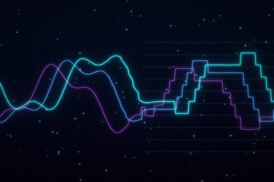

Pitch & Vocal
Moth Tune
Moth Tune 2, the flagship vocal tuner: Live (<1 ms) or Studio engine, dynamic vibrato (Preserve / Cut / Boost with separate pitch, amplitude and timbre depth), Auto Range, linked Formant, MIDI targets, 4 harmony voices triggered by notes or CC, Graph notes